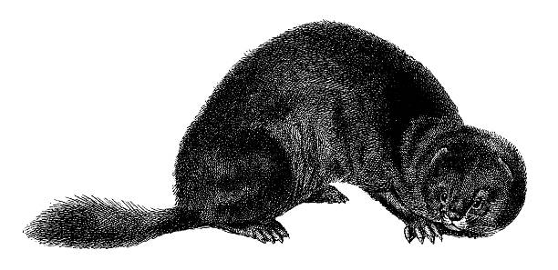

| HP: | 1 x host Proficiency Bonus |
| AC: | 16 |
| SPD: | 30ft |
| Squirrely |
|---|
| Advantage on DEX saves, and does not take any damage when successfully saving |
| Stalk Prey |
|---|
| Select a target within line of sight and 30ft, the next melee attack against the character from an allied that is also within Abyssal Mink's line of sight, the character gains advantage on that roll. |
| Predatory Strike |
|---|
| Attack roll+PB+Host WIS 5FT range, deals 1d4 magical physical damage. If the target has Stalk Prey, the attack ignores resistances. |
| Expose Weakness [3SP] |
|---|
| Mink raises its quills and makes a 30ft ranged attack + proficiency bonus +Host WIS against a creature. On a successful hit, the Mink deals a 1d6+proficiency bonus damage type chosen by it's host, and the target gains vulnerability to that damage type until the end of the targets next turn. If the target has Stalk Prey, the attack ignores resistances and is rolled as pent. Regardless of whether the attack lands or not, the Mink is unsummoned and is treated as if it's killed. |